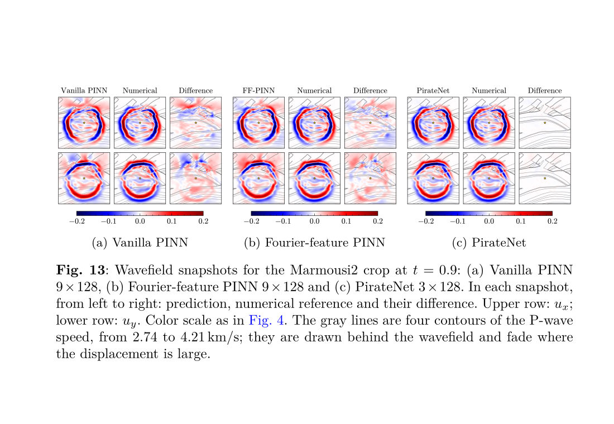
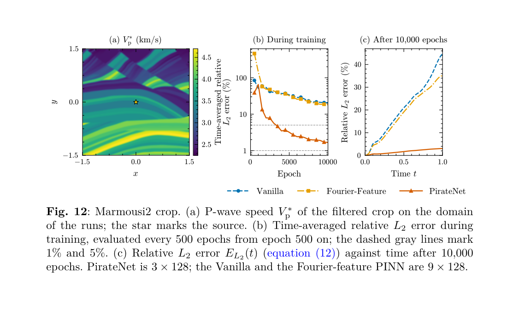

SUBMITTED 2026MANUSCRIPT
Adaptive Physics-Informed Neural Networks for Elastic Wave Propagation in Heterogeneous Media
PirateNet reaches 1.67% error on the filtered Marmousi2 model, against about 20% for a standard PINN.
Key results
- Filtered Marmousi2: 1.67% time-averaged relative L2 error for PirateNet 3 × 128, compared with 20.71% for the standard PINN and 18.25% for the Fourier-feature PINN.
- Six-layer medium: 0.40% for PirateNet 2 × 128 at a similar parameter count, compared with 4.12% and 5.50%.
- Error at the final time on Marmousi2: 3.0%, compared with 45% and 35%.

One run per configuration in two-dimensional, constant-density media with smoothed or low-pass-filtered material models. These are numerical benchmarks, not field measurements on concrete. This is a submitted manuscript, not yet peer reviewed.